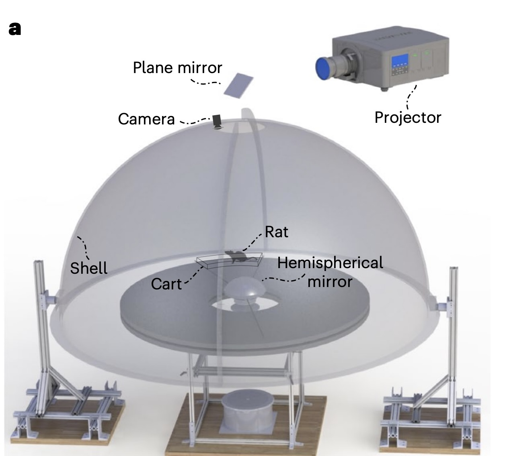
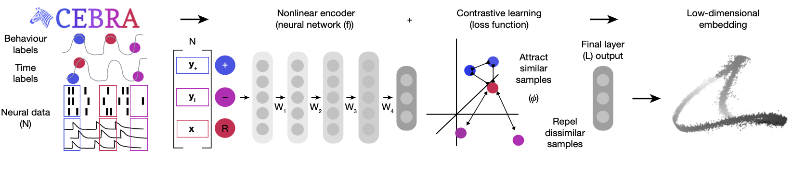
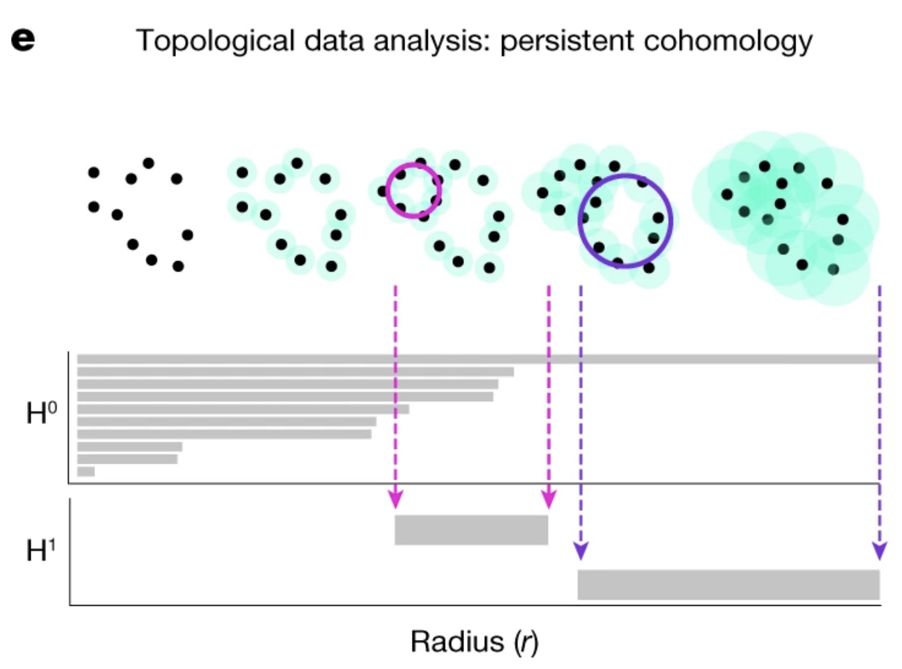
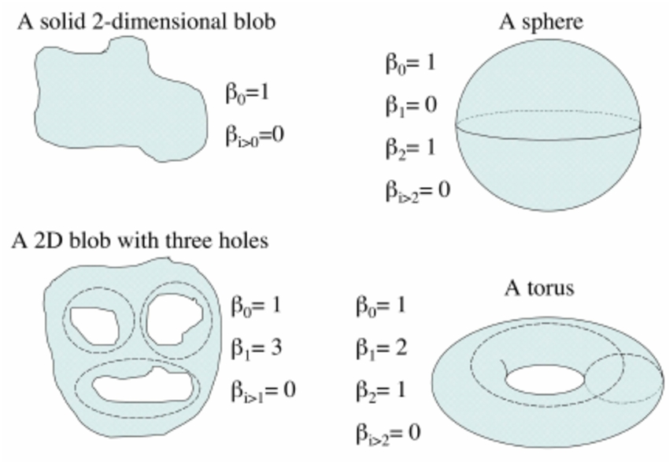

Problem Description:
Understanding how animals navigate is an important area of research that has applications in early detection of diseases such as Alzheimers and Huntington as well as advancing autonomous robotics and reinforcement learning. One way that the brain encodes spatial information is through a mechanism known as the “Cognitive Map” (Behrens et al. (2018)). Specifically, the hippocampus plays a key role in this process by using path integration to keep track of an animal’s position through the integration various idiothetic cues (self-motion signals), such as optic flow, vestibular inputs, and proprioception.
The question then arises: How can we manipulate hippocampal neurons by presenting conflicting visual cues? Basically, by studying what happens when we perturb normal self-motion cues in an animal’s environment and observing the resulting changes in the brain’s navigation system, we can understand better how animals navigate and map their environments. This blog will focus on experiments conducted in “Control and recalibration of path integration in place cells using optic flow” (Madhav et al. (2024)).
Experimental Setup
In the paper “Control and recalibration of path integration in place cells using optic flow” (Madhav et al. (2024)), Dr. Madhav and colleagues designed an experimental setup to investigate how optic flow cues influence hippocampal place cells in freely moving rats. Place cells are neurons that fire when an animal is in a specific location within its environment, effectively encoding spatial information.
For example, imagine a rat moving along a horizontal linear track. For simplicity let’s say the rat has only 3 place cell neurons. In this case, Neuron 1 would fire when the rat is at the very left of the track, Neuron 2 would fire when the rat is in the middle of the track, and Neuron 3 would fire at the very right of the track. As the rat moves along the track, the specific place cells corresponding to each location become activated, helping the rat to construct an internal cognitive map of its environment.
The Dome Apparatus
In the experiment, rats ran on a circular platform surrounded by a hemispherical projection surface called the Dome.

The dome projected moving stripes that provided controlled optic flow cues. The movement of the stripes was tied to the rats’ movement, with the stripe gain (\(\mathcal{S}\)) determining the relationship between the rat’s speed and the stripes’ speed.
\(\mathcal{S}\) = 1: Stripes are stationary relative to the lab frame, meaning the rat is not recieving conflicting cues.
\(\mathcal{S}\) > 1: Stripes move opposite to the rat’s direction, causing the rat to percieve itself as moving faster than it is.
\(\mathcal{S}\) < 1: Stripes move in the same direction but slower than the rat, causing the rat to percieve itself as moving slower than it is.
Electrodes were inserted into the CA1 of the hippocampus of male evan’s rats and spike rate neural activity was recorded during the experiment. Dr. Madhav and colleagues introduce a value \(\mathcal{H}\), called the Hippocampal Gain. It is defined as the relationship between the rat’s physical movement and the updating of its position on the internal hippocampal map. Specifically,
\[ \mathcal{H} = \frac{\text{distance travelled in hippocampal reference frame}}{\text{distance travelled in lab reference frame}}. \]
In this equation, distance travelled in the hippocampal frame refers to the distance that the rat “thinks” it’s moving.
\(\mathcal{H} = 1\): The rat perceives itself as moving the “correct” speed
\(\mathcal{H} > 1\): The rat perceives itself as moving faster than it actually is with respect to the lab frame.
\(\mathcal{H} < 1\): The rat perceives itself as moving slower than it actually is with respect to the lab frame.
\(\mathcal{H}\) gives valuable insights into how these visual cues such as the moving stripes affect the rats’ internal cognitive map during the task. It gives an understanding of how the rats update their perceived position in the environment.
For example, an \(\mathcal{H}\) value of 2, would mean that the rat perceives itself as moving twice as fast as it actually is. Consequently each place cell corresponding to a specific location in the maze, will fire twice per lap rather than once.
Crux of the problem
Method of Determining \(\mathcal{H}\): Traditionally, \(\mathcal{H}\) is determined by analyzing the spatial periodicity of place cell firing over multiple laps using Fourier transforms, as seen in (Jayakumar et al. (2019),Madhav et al. (2024)). However, this method is cumbersome and lacks temporal precision within individual laps. A more precise, within-lap decoding of Hippocampal Gain (\(\mathcal{H}\)) could provide a deeper understanding of how path integration updates occur with finer temporal resolution. This could lead to new insights into how the brain updates its cognitive mapwhen receiving conflicting visual cues.
Main Goal
Our main goal is therefore to determine this \(\mathcal{H}\) value without using a Fourier Transform and instead somehow find a temporally finer, within lap estimation of \(\mathcal{H}\). Some key questions that motivate this research include:
How does the velocity of the rat affect the \(\mathcal{H}\) value?
What patterns does the \(\mathcal{H}\) value exhibit over the course of a lap? Does it relate to other behavioural variables?
Can we somehow decode the hippocampal gain online, by looking only at the raw neural data? (this is a longer term goal.)
We turn to CEBRA Schneider, Lee, and Mathis (2023) to address this question and explore some potential answers. In the next section, we will see how CEBRA can help decode \(\mathcal{H}\) reliably.
The basic idea is as follows: First, we aim to project the neural data into some latent space (likely, but not necessarily a lower dimensional space). In this space, we want the points to map out the topology of the task - specifically, to encode hippocampal position (the rat’s position in the hippocampal reference frame).
We assume that this task forms a 1D ring topology, given the cyclic nature of the dome setup and the periodic firing of place cells. Our first goal is to validate and construct a latent parametrization of this manifold, specifically designed to directly reflect the hippocampal position. With an accurate hippocampal position parametrization, we could then decode \(\mathcal{H}\), giving us a more temporally fine estimation of \(\mathcal{H}\).
Next, we move on to what CEBRA is and how it can help us achieve our goal.
What is CEBRA?
CEBRA, introduced in Schneider, Lee, and Mathis (2023), is a powerful self-supervised learning algorithm designed to create consistent, interpretable embeddings of high-dimensional neural recordings using auxiliary variables such as behavior or time. CEBRA generates consistent embeddings across trials, animals, and even different recording modalities.
In our analysis, we will use the discovery mode of CEBRA, with only time as our auxiliary variable. CEBRA is implemented in python, with extensive documentation and demos for users. The code and data used in the paper is open source.
The Need for CEBRA
In neuroscience, understanding how neural populations encode behavior is a large challenge. Traditional linear methods like PCA, or even non-linear approaches like UMAP and t-SNE, fall short because they fail to capture temporal dynamics and lack consistency across different sessions or animals. CEBRA addresses these limitations by using contrastive learning to structure the embedding space around auxiliary variables such as time. The ability to encode temporal information makes CEBRA a powerful tool for analyzing our neural data, as time plays a crucial role in our experimental set up.
How Does CEBRA Work?
CEBRA uses a convolutional neural network (CNN) encoder trained with contrastive learning to produce a latent space. The algorithm identifies positive and negative pairs of data points, using temporal proximity to structure the embedding space. For example, in our experiment, data points that are temporally close will be mapped closer together in the latent space, while those further apart in time will be separated.
Key Features of CEBRA
Nonlinear Embedding: CEBRA allows the discovery of non linear patterns in neural data.
Consistency Across Sessions and Animals: Unlike other methods, CEBRA produces embeddings that are consistent across animals and sessions, making it highly generalizable for multi-session or multi-animal experiments.
Temporal Encoding: CEBRA captures neural representations with high temporal resolution, enabling finer decoding of neural activity over time.
CEBRA Architecture
CNN
In CEBRA, the first layer is a Convolutional Neural Network (CNN), which serves as the encoder that processes the high-dimensional neural time series data, such as spike trains, into a lower-dimensional latent space. The CNN’s primary role is to transform the neural activity into representations that capture the underlying neural dynamics (in our case, hippocampal place cell firing). The CNN is designed to detect and extract hierarchical features from the neural data. This is especially effective in identifying spatial and temporal patterns in the neural activity. For example, in the case of neural recordings, the CNN could extract firing rate patterns or local correlations between neurons. This is useful for our purposes since we want to know how the neurons relate to one another at a population level as the mouse traverses the dome apparatus. These layers are followed by fully connected layers (typical in a CNN) that map the high-level features into a compact, low-dimensional representation or embedding.
Contrastive Learning
Once the latent space is produced, it is then trained on a network using a contrastive learning loss function. In CEBRA, this is achieved through InfoNCE (Noise Contrastive Estimation), which encourages the model to distinguish between similar (positive) and dissimilar (negative) samples.
The loss function is defined as:
\[ \mathcal{L} = - \log \frac{\exp(\text{sim}(f(x), f(y^+)) / \tau)}{\exp(\text{sim}(f(x), f(y^+)) / \tau) + \sum_{i=1}^{K} \exp(\text{sim}(f(x), f(y_i^-)) / \tau)} \]
Where f(x) and f(y) are the encoded representations of the neural data after passing through the CNN, $ (f(x), f(y)) $ is a similarity measure between two embeddings, implemented as cosine similarity, \(y^+\) represents the positive pair (similar to $ x $ in time), $ y_i^- $ represents the negative pairs (dissimilar to $ x $ in time), $ $ is a temperature parameter that controls the sharpness of the distribution.
Note that the similarity measure depends on the CEBRA mode used, and we have used time as our similarity measure. The contrastive loss encourages the encoder to map temporally close data points (positive pairs) to close points in the latent space, while mapping temporally distant data points (negative pairs) further apart. This way, the embeddings reflect the temporal structure of the data. The final output is then the embedding value in the latent space. Below is a schematic taken from the original paper, showing the CEBRA architecture.

Once we obtain the neural embeddings from CEBRA, the next step is to determine the underlying manifold that describes structure of the resulting point cloud. For example, let’s consider the output of a CEBRA embedding from one experimental session.

The embedding appears to form a 1D circle in 3D space. We can also see that the hippocampal position correctly traces the rat’s hippocampal position throughout the experiment. This observation aligns with our expectations, since we predict that the neural activity encodes the hippocampal reference frame position, not the lab frame position. To validate the 1D ring topology, we apply a technique known as Persistent Homology.
Persistent Homology
Persistent homology allows us to quantify and verify the topological features of our embedded space. Specifically, we want to validate the assumption that the neural representation forms a 1D ring manifold, which corresponds to the rat’s navigation behavior within the environment. The idea of persistent homology is to create spheres of varying radii around each point in the point cloud, and from those spheres, track how the topological features of the shape change as the radius grows. By systematically increasing the radius, we can observe when distinct clusters merge, when loops (1D holes) appear, and when higher-dimensional voids form. These features persist across different radius sizes, and their persistence provides a measure of their significance. In the context of neural data, this allows us to detect the underlying topological structure of the manifold. Below is a figure describing showing this method Schneider, Lee, and Mathis (2023):

Validating a 1D Ring Manifold
To confirm the circular nature of the embedding, we analyze the Betti numbers derived from the point cloud. Betti numbers describe the topological features of a space, with the $ k $-th Betti number counting the number of $ k $-dimensional “holes” in the manifold. Below is a figure showing a few basic topological spaces and their corresponding Betti numbers Walker (2008):

For a 1D ring, the expected Betti numbers are: \[ \beta_0 = 1 : \text{One connected component.} \] \[ \beta_1 = 1 : \text{One 1D hole (i.e., the circular loop).} \] \[ \beta_2 = 0 : \text{No 2D voids.} \]
Thus, the expected Betti numbers for our manifold are (1, 1, 0). If the Betti numbers extracted from the persistent homology analysis align with these values, it confirms that the neural dynamics trace a 1D circular trajectory, supporting our hypothesis that the hippocampal representation forms a ring corresponding to the rat’s navigation path.
SPUD Method
Once we’ve validated the assumption that our data forms a 1D ring manifold, we can proceed to fitting a spline to the data. There are many different methods, but the one chosen for this purpose was taken from Chaudhuri et al. (2019), called Spline Parametrization and SPUD. They worked with similar experiments and goals. The spline is defined by a set of points, or knots, which are initialized using kmedoids clustering Jin and Han (2011). The knots are then fit to the data further by minimizing a loss function defined as follows:
\[ \text{cost} = \text{dist} + \text{curvature} + \text{length} - \text{log(density)} \]
where dist is the distance of each point to the spline, curvature is the total curvature of the spline, length is the total length of the spline, and density is the point cloud density of each knot.
Overview of the SPUD Method
Spline Parameterization for Unsupervised Decoding (SPUD) Chaudhuri et al. (2019) is a multi-step method designed to parametrize a neural manifold. The goal of SPUD is to provide an on-manifold local parameterization using a local coordinate system rather than a global one. This method is particularly useful when dealing with topologically non-trivial variables that have a circular structure. The researchers developed this method to understand head direction representations in rats moving in a 2D environment.
Spline Parameterization: SPUD parameterizes the manifold by first fitting a spline to the underlying structure. Chaudhuri et al. (2019) demonstrated that this works for head direction cells in mice to accurately parametrize, i.e. decode the head direction. Our goal is to have the parametrization accurately decode our latent variable of interest, the Hippocampal Gain (\(\mathcal{H}\)).
Deciding the Parameterization of the Latent Variable
Natural Parametrization
A natural parameterization would mean that equal distances in the embedding space correspond to equal changes in the latent variable. The belief in the natural parameterization is rooted in the idea that neural systems allocate resources based on the significance or frequency of stimuli. For example, in systems like the visual cortex, stimuli that occur frequently (e.g., vertical or horizontal orientations) might be encoded with higher resolution. However, for systems like head direction, where all angles are equally probable, the natural parameterization reflects this uniform encoding strategy, with no overrepresentation of certain angles (Chaudhuri et al. (2019)). This would be expected with the hippocampal formation as well, that no place in a non biased circular maze should be allocated extra resources than another place in the maze.
Alternative Parameterization and its Limitations
An alternative parameterization method was considered, in which intervals between consecutive knots in the spline were set to represent equal changes in the latent variable. This approach was designed to counteract any potential biases in the data due to over- or under-sampling in certain regions of the manifold.
However, this alternative was not determined to be effective in practice by Chaudhuri et al. (2019). Given sufficient data, the natural parameterization performed better, supporting the conclusion that it better reflects how neural systems encode variables. In preliminary results, this is what seems to be the case for our experiment. Look to the following figure, in which a spline is fit to the data and a color map is applied to the natural parametrization. We can see that it aligns almost exactly with the hippocampal angle. Great, that’s exactly what we wanted!

So, what do we do now?
Decoding Hippocampal Gain (\(\mathcal{H}\))
Final Step
The next step is to determine if we can accurately decode Hippocampal Gain from the CEBRA embedding alone. The method to do this is straightforward (after all the setup is complete). Once we have parametrized the spline accurately to the neural data, we calculate the hippocampal gain by comparing the distance traveled in the neural manifold (derived from our spline) to the distance in the lab frame (actual movement of the rat).
The idea is that:
\[ \mathcal{H} = \frac{d\theta_\mathcal{H}}{d\theta_\mathcal{L}} \]
where \(\theta_H\) is the change in distance in the hippocampal reference frame, decoded from our spline parametrization of the neural manifold, and \(\theta_L\) is the physical distance traveled by the rat in the lab frame.
Note that this is actually just the original definition of $ $, but now \(\theta_H\) is determined by our spline parameter, not the Fourier Transform method.
For example, let’s take a time interval, say 1–2 seconds. To determine the hippocampal gain within that frame, we observe where the neural activity at times 1 and 2 maps in our manifold, calling these $ {H1} $ and $ {H2} $, respectively. Then, using the lab frame angles at times 1 and 2, which we’ll call $ {L1} $ and $ {L2} $, we find that:
\[ \mathcal{H}(\text{between } t=1 \text{ and } t=2) = \frac{\theta_{\mathcal{H2}} - \theta_{\mathcal{H1}}}{\theta_{\mathcal{L2}} - \theta_{\mathcal{L1}}} \]
We can apply this approach to any time interval (up to our sampling rate) to determine our \(H\) value with precision.
Next steps
Next steps will be to first validate our natural parametrization quantitavely among the many experiments to see how accurately it decodes hippocampal position. And then to actually decode the hippocampal gain and explore the results we get and (hopefully) gain new insights into the neural mechanisms of navigation.
Validate the Natural Parametrization: We will quantitatively assess the accuracy of our natural parametrization across multiple experiments to ensure it reliably decodes hippocampal position. This validation will confirm that the manifold is a faithful representation of the neural dynamics.
Decode the Hippocampal Gain: Once validated, we will proceed with decoding the hippocampal gain (\(H\)) from the neural manifold and explore the results. This analysis will allow us to gain new insights into the neural mechanisms underlying navigation and path integration, potentially revealing novel aspects of how the hippocampus processes spatial information.
Apply to New Sessions: We can then leverage the cross-session consistency of CEBRA embeddings to apply this method to knew experimental sessions and modalities.